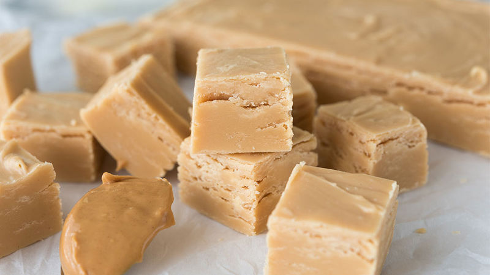

Two-ingredient Peanut Butter Fucge

Fudge is such a classic dessert and this 2 ingredient peanut butter fudge
is by far the easiest way to make fudge ever. Your mind will be blown when
you taste this absolutely delicious treat!
Ingredients:
- 16oz jar of peanut butter
- 16oz vanilla frosting
Directions:
- In a microwave safe container, melt the peanut butter and frosting together for one minute.
- Stir and heat for one more minute.
- Pour mixture into a 9x9 glass banking pan.
- Smooth, then refrigerate fudge until hard. About an hour.
Return to Homepage